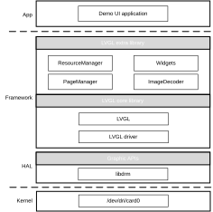
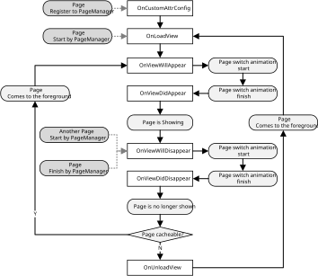
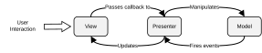

Overview
Display framework is a whole display architecture aiming to provide the convenience and friendly interfaces for application GUI development.
Architecture
The display framework architecture is shown in the following figure.
{kind=link}

The main components are described in the following sections.
libdrm
libdrm is the cross-driver middleware which allows user-space to communicate with the kernel by the means of the DRI protocol. It uses the Linux DRM driver interfaces to manage the display layers and memories of display module and provides the interfaces for the upper layer.
Manages the display layers including creating layers, setting display attributes, filling and flushing layers
Manages memory of display module, including memory allocation, release and mapping
LVGL Core Library
LVGL core library includes LVGL and LVGL driver Library.
The open-source graphic library (LVGL) is an open-source graphics library providing elements needed to create embedded GUI. Visit LVGL io to access the detail features.
LVGL driver implements the display manage interface base on LVGL core library.
LVGL Extra Library
The LVGL extra library provides a series of elements to create GUI and implements the user interface easier base on the LVGL. It is divided into four parts:
PageManager: Manages the life cycle of the UI pages.
ResourceManager: Manages the resources in the resource pool.
ImageDecoder: Provides interfaces to decode compressed images.
Widgets: Customized LVGL UI widgets.
Demo UI Application
Demo UI application is the example implement of the GUI framework and located in <sdk>/sources/fwk/apps/pangu_app. It interacts with the background service through IPC to achieve its function. For example, Settings UI Page use the interface of AudioService to control the volume after the user slide the volume bar.
Interfaces
Overview
The graphic framework provides three layers of interfaces for user’s application from high layer to lowest layer.
API |
Introduction |
|---|---|
LVGL extra library |
High-level APIs to create UI |
LVGL core library |
Middle-level APIs to create UI |
HAL (libdrm) |
Low-level APIs to interact with graphic drivers |
libdrm
libdrm was created to facilitate the interface of user-space programs with the graphic drivers. This library is merely a wrapper that provides the interfaces through ioctls and sysfs files including memory mapping context management, DMA operations, AGP management, vblank control, memory management and output management.
LVGL Core Library
LVGL APIs
The LVGL provides the detailed tutorials for developers. To read more about it, visit LVGL Tutorials.
LVGL Driver APIs
To use the LVGL core library you have to initialize it and setup required components. The order of the initialization is as below:
Calls lv_init().
Uses lv_hal_init(int32_t w, int32_t h) to initialize the display drivers and input drivers.
Draw your UI app by using LVGL core library.
Call lv_timer_handler() every few milliseconds to handle LVGL related tasks..
The example below shows how to initialize your project in main.c
int main(void) {
lv_init();
lv_hal_init(480, 800);
……
while(1) {
lv_task_handler();
usleep(1000);
}
}
LVGL Extra Library
Page Manager APIs
Page Manager is used to manage the life cycle of the pages registered into the Page Manager with the special page name.
Register Page
Call RegisterPage(PageBase* base, const char* page_name) to register the page into the PageManager
g_page_manager->RegisterPage(audioSettings, "Pages/AudioSettings");
Start Page
Call Start(const char* page_name, const PageBase::Stash_t* stash = nullptr) to start the page.
g_page_manager->Start("Pages/Launcher");
Finish Page
Call Finish() to finish the page itself
g_page_manager->Finish()
Set Global Load Animation Type
Call SetGlobalLoadAnimType(LoadAnim_t anim, uint16_t time, lv_anim_path_cb_t path) to set the global load animation type.
g_page_manager-> SetGlobalLoadAnimType (LOAD_ANIM_OVER_LEFT, 300, lv_anim_path_ease_out)
Image Decoder APIs
Image decoder helps to decode the compressed pictures into C arrays.
Call LoadImage(const char* file_name, ImageInfo** info, int32_t color_depth) to decode the compressed pictures.
lv_img_dsc_t* image = (lv_img_dsc_t*) malloc(sizeof(lv_img_dsc_t));
ImageInfo* info;
LoadImage("/etc/bg.jpg", &info, 16);
Resource APIs
Resource Manager is used to manager all the resources, including images and fonts.
Add Resource
Create the resource manager by calling CreateResourceManager()
ResourceManager* res_ = ResourceManager::CreateResourceManager()
Call AddResource(const char* name, void* ptr) to add resource into ResourceManager.
Font (Only support C arrays)
LV_IMG_DECLARE(font_ariblack_150) res_->AddResource("ariblack_150", (void*)& font_ariblack_150);
Image (C arrays)
LV_IMG_DECLARE(image_bg) res_->AddResource("bg", (void*)& image_bg);
Get Resource
Call GetResource(const char* name) to get the resource.
res_ ->GetResource("bg")
Demo UI Application
Page
Page is a whole screen window contains series of UI elements. App comprises multiple pages. Typically, one page in an app is specified as the Launcher page, which is the first screen to appear when the user launches app after boot animation. Each page can then start another page in order to perform different actions. For example, the launcher page contains the audio settings icon, when user tap it, the page switch to the audio settings page.
Although pages work together to form a cohesive user experience in an application, each page is only loosely bound to the other pages, there are usually minimal dependencies among the pages in an app.
Lifecycle of Page
To use page in your application, you must implement a subclass of PageBase and register the page to the Page Manager. Page Manager will manage the page’s lifecycle. The life cycle of page is shown in the following figure.
{kind=link}

Over the course of its lifetime, a page goes through a number of states. You use a series of callbacks to handle transitions between states.
OnCustomAttrConfig()
It fires when the page is registered to Page Manager. This callback use to set the custom attribute of the page, including set the custom load animation and set the page cache status.
OnLoadView()
It fires when the user start your page. You should initialize the UI elements and implement the input event callback.
OnViewWillAppear()
As OnLoadView() exits, the page enters the switch animation perform status. The page becomes visible but show only part of the UI. The time-consuming task and UI update task could start in the callback method.
OnViewDidAppear()
As switch animation finish, the page shows the whole UI now.
OnViewWillDisappear()
The system invokes the callback when another page started or the Page finished itself. Switch animation is starting and Page is partly visible.
OnViewDidDisappear()
After switch animation finish, the page is invisible now. Please stop the task which started in the OnViewWillAppear() callback. If you set the cache enabled in the OnCustomAttrConfig() callback, The UI elements of this page will keep in cache even it is invisible. The next callback when the system restart the page is OnViewWillAppear(). Otherwise, the system will destroy the UI elements and recycle the resource. The next callback is OnUnloadView().
OnUnloadView()
The system invokes this callback before a page is destroyed. Make sure all the resources are released.
Integrate With MVP Pattern
We recommended all the pages’ implements integrated with Model View Presenter (MVP) architecture pattern. The typical MVP pattern is shown in the following figure.
{kind=link}

In this pattern, the presenter provides the external interfaces. The internal interactions of view and model is handled by presenter. Integrating with the pattern, the page’s implements divided into 3 parts:
Presenter
Implements the lifecycle callback
Handles the use interaction callback
Creates the UI view. (the system will help to recycle all the UI resources according to the lifecycle)
Updates the UI view
Manipulates the Model
Reviews data from Model
View
Provides the interface to create the UI view
Provides the interface to update the UI view
Model
Provides the interface to realize the use interaction request
Reports the data change to Presenter
Interacts with the other services though IPC
Set Up Page
This section introduces how to set up a page, we will take the Audio Settings Page as example. The source codes is located at <sdk>/sources/fwk/apps/pangu_app/src/pages/audio_settings. The Audio Settings Page consists of three parts integrating the MVP pattern.
Page Presenter:
audio_settings.cpp,audio_setting.hPage View:
audio_settings_view.cpp,audio_settings_view.hPage Model:
audio_settings_model.cpp,audio_settings_model.h
Implement a subclass of PageBase to set up your page. The PageBase class provides a core set of seven callbacks:
OnCustomAttrConfig()
OnLoadView()
OnViewWillAppear()
OnViewDidAppear()
OnViewWillDisappear()
OnViewDidDisappear()
OnViewDidUnload()
You must implement these callbacks in the page presenter file.
Scroll View
The scroll view is a container object whose elements can be arranged in grid form. All elements of the scroll view is a whole screen window. A user can navigate between the elements by scrolling the screen in 4 directions (left-to-right, right-to-left, top-to-bottom, and bottom-to-top). Any direction of scrolling can be disabled on the elements individually to not allow moving from one tile to another.
Create Scroll View
This section introduces how to set up a scroll view, we will take the Launcher’s scroll view as an example. The source codes is located at <sdk>/sources/fwk/apps/pangu_app/src/pages/Launcher.
Launcher has a scroll view containing three elements, home, music and settings.
Create a scroll view with that x size is 3, y size is 1.
scroll_view_ = lv_scrollview_create(root, 3, 1);
Add all child elements into the scroll view and get the root object.
lv_obj_t* home_root = lv_scrollview_add_child(scroll_view_, HOME, 0, 0, LV_DIR_HOR); home_ = new Page::Home(page->manager_); home_->CreateView(home_root); lv_obj_t* settings_root = lv_scrollview_add_child(scroll_view_, SETTINGS, 1, 0, LV_DIR_HOR); settings_ = new Page::Settings(page->manager_); settings_->CreateView(settings_root); lv_obj_t* music_root = lv_scrollview_add_child(scroll_view_, MUSIC, 2, 0, LV_DIR_HOR); music_ = new Page::Music(page->manager_); music_->CreateView(music_root);
Use lv_scrollview_set_act(const char* name) to set the special element active.
lv_scrollview_set_act(HOME)